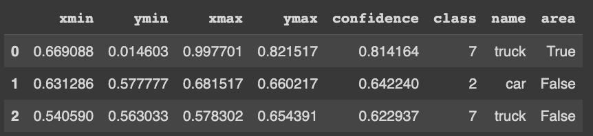

process pic...
Pre-processing
☕ import vedio (.mp4)
The video is 2hr8min55s which is 26060+8*60+55=7735 seconds
The frame rate for the video is roughly 30 frames per second
So there are around 7735*30=232050 frames
☕ read and convert the video into an ORDERED set of images
save frames every 50 seconds, that will be around 155 images
# transform1: change utc to readable timestamp format
teenagers_comments = teenagers_comments.withColumn("created_time", to_timestamp(teenagers_comments["created_utc"]))
# transform2: extract hour part from readable timestamp "created_time"
comments_hour = teenagers_comments.limit(1000000).toPandas()["created_time"].apply(lambda x: x.hour).to_frame()
Explore the model
Before processing the video data, we want to make sure we can get YOLO working correctly for a few images.
Original image
# INSERT CODE TO LOAD THE YOLO MODEL USING PYTORCH
model = torch.hub.load('ultralytics/yolov5', 'yolov5s')
# AT FIRST USE THE FOLLOWING IMAGES AS A TEST CASE
images=['frames/00050.jpg','frames/00200.jpg']
# INSERT CODE TO EVALUATE THE YOLO MODEL ON THESE IMAGES
results = model(images)
results.show()

Images after process
#THE INFORMATION ABOUT THE BOUNDING BOXES CAN BE EXTRACTED AS FOLLOWS
print(results.pandas().xyxy[1])

Objects summary
Explore the model
normalize (scale) the xmin, xmax by the width of the image and ymin, ymax by the height --> HxW=1x1
compute the area and center of each box using the normalized coordinates
add a column named "nearby" which is True if normalized_area>0.05
def box_normalize(df):
YMAX=img.shape[0]
XMAX=img.shape[1]
df["xmin"] = (df["xmin"]/XMAX)
df["xmax"] = (df["xmax"]/XMAX)
df["ymin"] = (df["ymin"]/YMAX)
df["ymax"] = (df["ymax"]/YMAX)
df['area'] = (df["xmax"] - df["xmin"]) * (df["ymax"] - df["ymin"])
df['area'] = np.where(df['area'] > 0.05, True, False)
return df
box_normalize(results.pandas().xyxy[0])

Time-series analysis
Process all images ...
Loop over the results and build arrays with time-series data for the following:
The frames are ordered so we can treat the index as a "time" variables
Total number num_cars and num_trucks in each frame
num_neighbor = Number of neighboring cars and trucks (use normalized box area > .05 to signify a nearby car or truck)
# INSERT CODE TO LOOP OVER RESULTS AND BUILD ARRAYS
num_cars = []
num_trucks = []
num_neighbor = []
for i in range(0,len(results)):
temp = box_normalize(results.pandas().xyxy[i])
car_count = (temp["name"] == "car").sum()
truck_count = (temp["name"] == "truck").sum()
neighbor_count = (temp["area"] == True).sum()
num_cars.append(car_count)
num_trucks.append(truck_count)
num_neighbor.append(neighbor_count)
Conclusions
In this blog, we first use Word Cloud to give an important impression about what the text says, then show how to use NLTK and spark NLP to do basic text cleaning and finally show how to use spark ML to build pipelines. Although we mention some business sense when analyzing data, we still need to consider more. If you are interested in this project, you can click the link below, our group mate analysis from other angles, or contact me directly through email.
Links for more details